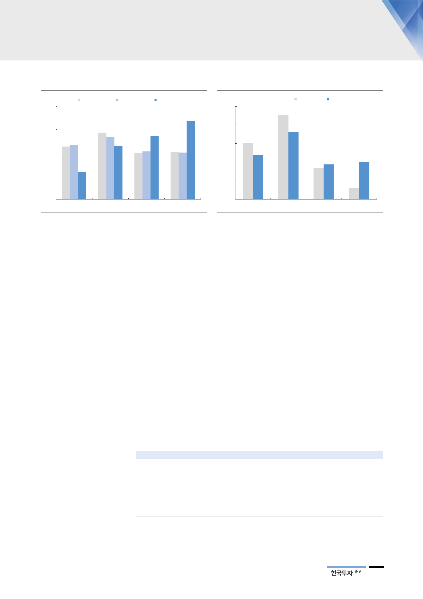

[그림 8] 발전설비 비중 – 기저 줄이고 신재생 확대
(%)
40
6차(2027년) 7차(2029년) 8차(2031년) 계획
33.6
30
27.2
22.9
20
11.7
10
0
원자력
석탄
자료: 산업통상자원부, 한국투자증권
LNG
신재생
[그림 9] 발전량 비중 – 신재생 2030년 20%로 확대
(%)
50
2017년
2030년 계획
40
36.1
30
23.9
20
18.8
20.0
10
0
원자력
석탄
자료: 산업통상자원부, 한국투자증권
LNG
신재생
탈원전은 시대적 흐름
에너지 정책을 수립함에 있어 환경과 안전에 대한 고민이 커지는 것은 전세계적
인 흐름이다. 특히 사후처리비용과 잠재적 위험성을 감안하면 원전이 값싼 에너
지가 아닐 수 있다는 인식이 퍼지고 있다. 2011년 후쿠시마 원전사고로 안전에
대한 철저한 대비를 해온 일본 역시 반발여론에 직면하면서 원전 반대론이 힘을
얻었다. 안전요건이 강화되면서 원전 건설에 소요되는 시간과 비용 모두 증가하
는 추세다. 현재 전세계적으로 건설 중인 55기의 원전 중 30기 이상의 완공이 당
초 계획보다 수 년 이상 지연될 전망이다. 일본의 경우 강화된 원전 규제에 따른
안전대책비가 앞으로 총 4조엔을 넘을 것으로 예상된다.
후쿠시마 원전사고 이후
원전은 가시밭길
원전의 역사가 긴 선진국일수록 노후화와 사후처리문제를 경험하면서 원자로 확
대에 한 발 물러서는 모습이다. 전체 원자로의 절반 이상이 있는 미국과 유럽은
신규 건설보다 가동 중단되는 원전이 더 많은 상황이다. 독일을 필두로 스위스,
벨기에, 이탈리아, 프랑스 등이 원전 축소 대열에 합류했다. 독일은 2022년, 스위
스와 벨기에는 2025년까지 모든 원자로의 가동을 중단할 계획이다. 전세계에서
규모가 가장 큰 미국의 원전산업은 가격이 떨어진 천연가스에 대한 선호도가 높
아지면서 위축되고 있다. 지난 2013년 이후 수익성 악화로 7개의 원전이 조기폐
로를 결정했다.
<표 4> 미국의 조기폐로 원전 현황
원전
Crystal River 3
Kewaunee
San Onofre 2
San Onofre 3
Vermont Yankee
Fort Calhoun 1
Oyster Creek
운영업체
Duke Energy
Dominion Generation
Southern California Edison
Southern California Edison
Entergy
OPPD
Exelon
자료: 산업자료, 에너지경제연구원, 한국투자증권
지역
Florida
Wisconsin
California
California
Vermont
Nebraska
New Jersey
가동시작시기
1977년
1974년
1983년
1984년
1972년
1973년
1969년
폐로시기
2013년 2월
2013년 5월
2013년 6월
2013년 6월
2014년 12월
2016년 10월
2018년 10월
7